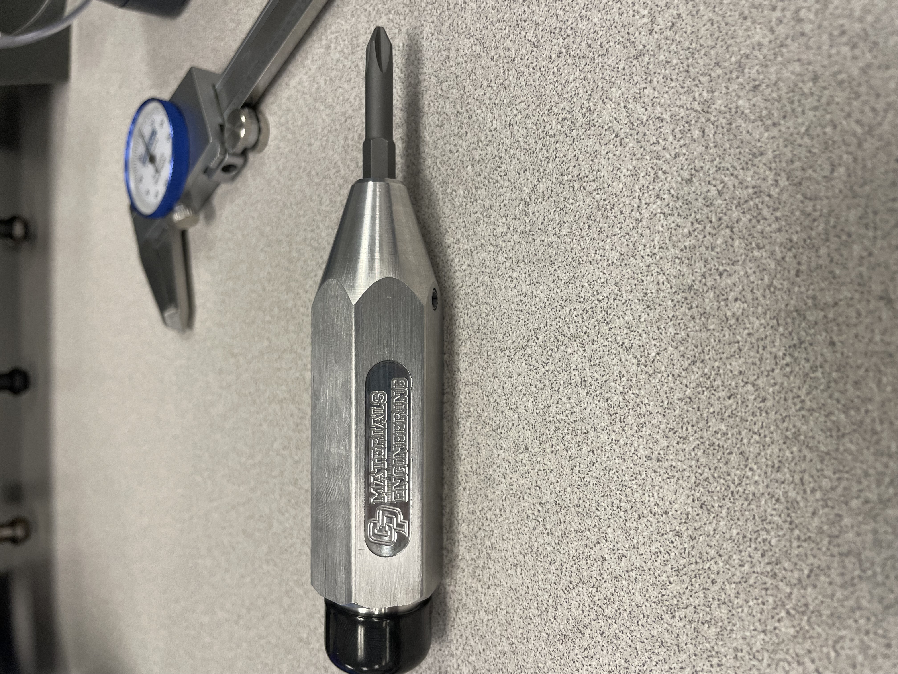
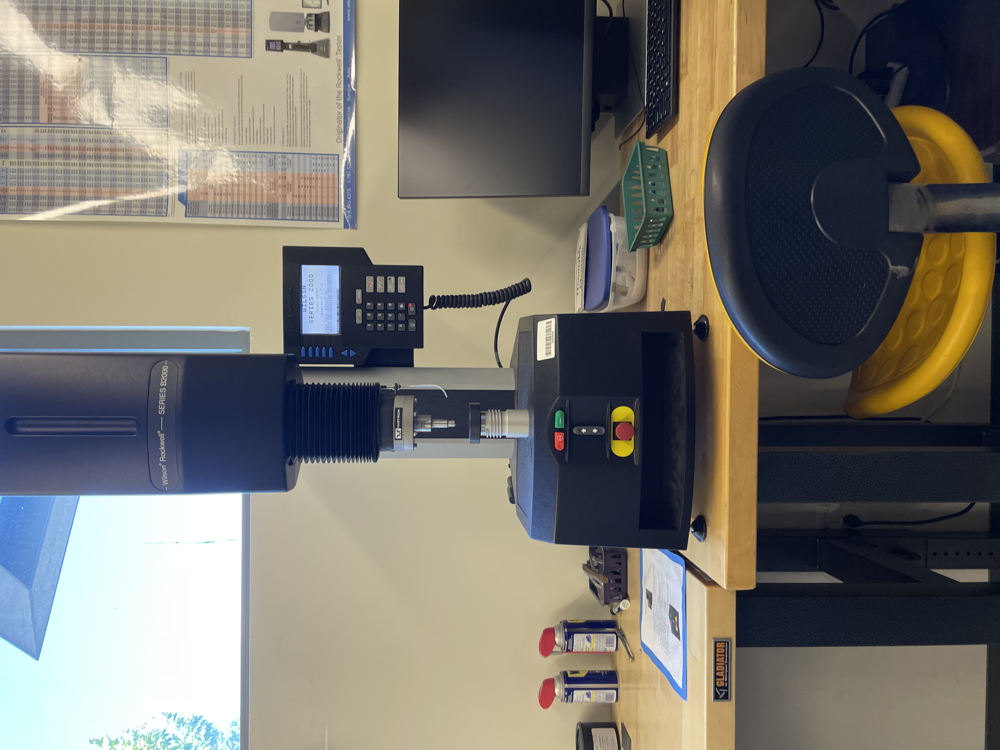
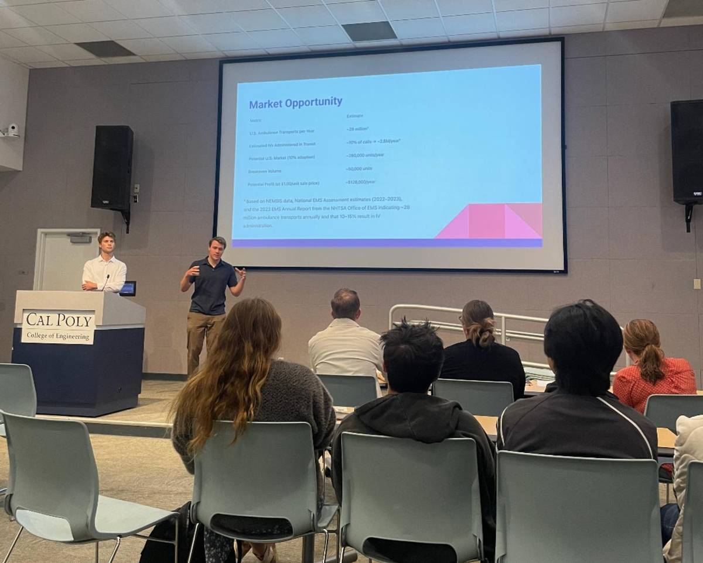
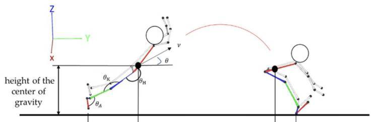
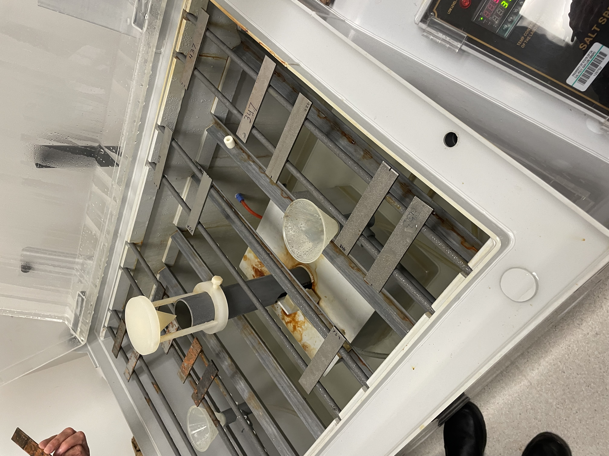
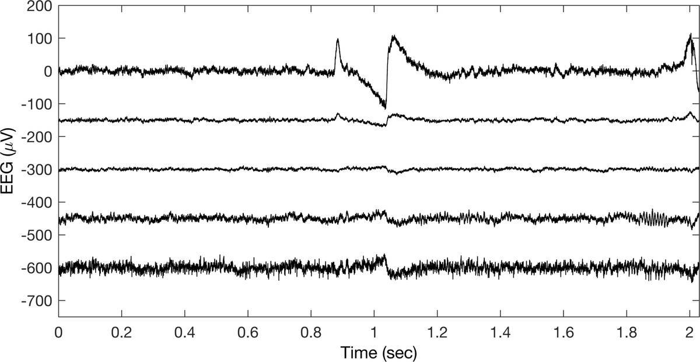

Biomedical
Engineering
Built for real life.
Cal Poly SLO student with a strong interest in the human body and psychology — especially how stress can be reduced through natural environments to improve human performance and well-being.

Projects
IV League, Pismo, and Biomechanics LabBiomechanics Lab
Movement analysis and biomechanics — translating motion, forces, and technique into something measurable and useful.

IV League — Biomedical Make-a-thon
Developed a low-cost stabilization device to improve IV placement success in moving ambulances. KISS: Keep It Simple.

Prosthetic Leg — Pismo the Dog
Collaborated on a prosthetic solution for Pismo, a three-legged dog. The real challenge: identifying the actual problem. Final solution shifted toward stroller-based mobility support.

Anatomy
Took Anatomy with an emphasis on the nervous system. Performed several dissections and had the rare opportunity to hold an actual human brain. Final practical: identifying labeled anatomical structures on cadavers in real time.

More research + projects
A few areas I've worked inHands-on build
Manufacturing, tools, and making things that work in the real world.
Tensile testing
Using a tensile strength tester to evaluate materials under different conditions and compare performance.
Saltwater Rust Machine
Designing controlled corrosion tests to compare how materials hold up across environments.

EEG + imaging
Weekend MATLAB course exploring EEG imaging and signal interpretation — learning how brain data becomes something usable.

Collaborate
If you're building something around the body, performance, or better environments — I'm interested.